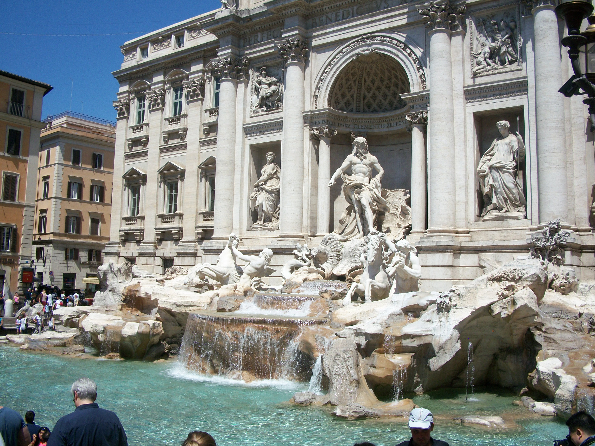

The Trevi Fountain

Basic facts about theTrevi Fountain:
Artist: Nicola Salvi
Construction started: 1732
Address: Piazza di Trevi, 00187, Roma, Italy
Architectural style: Baroque architecture
Architects: Gian Lorenzo Bernini, Nicola Salvi, Pope Clement XII
Media: Travertine, Carrara marble
The Trevi Fountain is most known for its beauty and the excitement it attracts during the daytime, as well as during the nighttime. It is also known for the wishes granted depending on the number of coins you toss.
- If you throw one coin into the water, with your right hand over your left shoulder, you will inevitably return to Rome.
- If you throw two coins into the water, you will find romance.
- If you throw three coins into the water, you will get married. (Or divorced!)